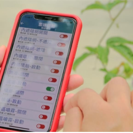

新聞與活動
- 相關新聞
- 活動消息

2020-06-20
善用農業科技降災損！台灣農業與老天共處的方式 | 田下大小事
民視
灣水資源與農業研究所與農試所合作，針對短期葉菜類進行研究，了解蔬菜在淹水後的植株與產量變化，更可藉此研究出應對方式；而農委會也與中央氣象局合作，透過災害...
查看更多2020-06-20
善用農業科技降災損！台灣農業與老天共處的方式 | 田下大小事
民視
灣水資源與農業研究所與農試所合作，針對短期葉菜類進行研究，了解蔬菜在淹水後的植株與產量變化，更可藉此研究出應對方式；而農委會也與中央氣象局合作，透過災害...
查看更多2020-06-20
善用農業科技降災損！台灣農業與老天共處的方式 | 田下大小事
民視
灣水資源與農業研究所與農試所合作，針對短期葉菜類進行研究，了解蔬菜在淹水後的植株與產量變化，更可藉此研究出應對方式；而農委會也與中央氣象局合作，透過災害...
查看更多